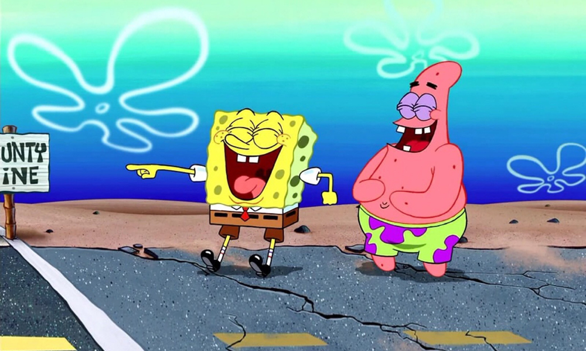

场景地点
比奇堡：海绵宝宝卡通的背景城市，故事于此上演。
凤梨屋：海绵宝宝和小蜗的家，是从某一艘船上掉落的凤梨。
复活岛人像屋：章鱼哥的家，位于海绵宝宝家和派大星家之间，外型为深蓝色复活岛人像。
石头屋：派大星的家，位于章鱼哥家隔壁。外型为红棕色半圆体石头，里面的家具摆设由沙子堆成。
圆顶树屋：珊迪的家，里面充满空气，外型以玻璃制成。海洋生物进入常需戴上装水头盔防止干燥。
船锚屋：蟹老板和珍珍的家，外型为深蓝色船锚。
蟹堡王餐厅：蟹老板所经营的快餐店，比奇堡著名的餐厅之一，外观是一个龙虾陷阱的模样。
海之霸餐厅：皮老板的餐厅和住所，外观是一个水桶的模样，餐点恶心又不卫生，几乎没有客人上门。